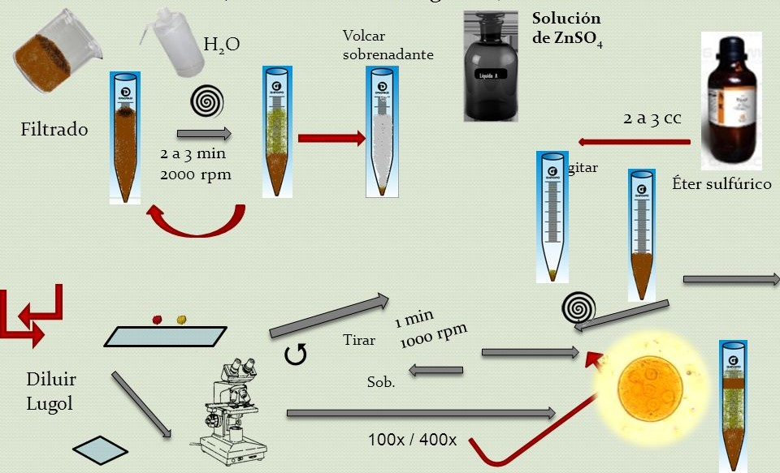
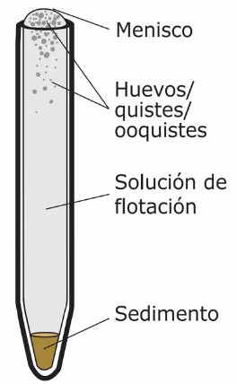
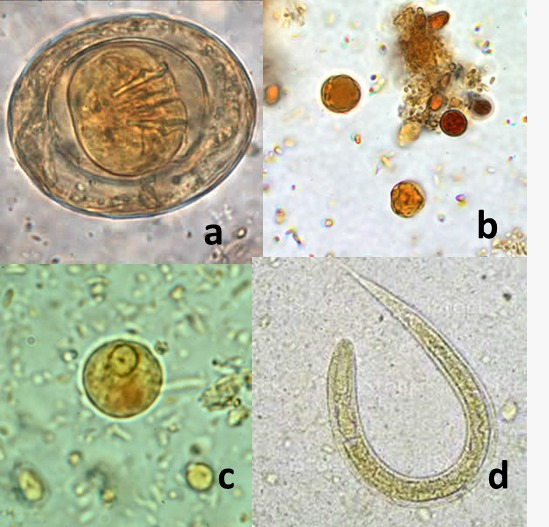

Fundamento
•Se basa en la diferencia de densidades entre los parásitos y las heces; al centrifugar y mezclar la muestra fecal con una solución sobresaturada de
, los huevos y quistes flotan hacia la superficie, donde pueden ser recogidos y observados al microscopio. (Salvatella. R, Eirale.C, 1996)
La concentración
de sulfato de zinc más útil tiene una densidad de 1,18g/ml, por lo general al 33%.
Si se trata de muestras fijadas con
formalina se recomienda emplear una densidad de
1,20g/ml.

Técnica de Faust, Preparación de la muestra.

Técnica de Faust, interfases.
Puntos críticos
•Utilizar una solución de sulfato de sodio adecuadamente preparada, ya que la separación de los parásitos de las heces depende de una adecuada densidad.
• Es más complicado (poco probable) visulaizar los parásitos más densos.
•Evitar la formación de burbujas durante el proceso de flotación. (García.L, 2023)
•La centrifugación se realiza a 1500 o 2000 rpm (Vázquez Martínez, et.al 2012)
•No es recomendable para huevecillos operculados
•Presenta mayor sensibilidad que especificidad.
•Puede tener una menor sensibilidad para la detección de formas larvarias. (Palomino. A, et.al, 2018)
Parásitos detectables
Ascaris lumbricoides, Trichuris trichiura, Hymenolepis nana, Enterobius vermicularis, Entamoeba histolytica, Cryptosporidium spp, Strongyloides stercoralis.
Giardia intestinalis, Entamoeba histolytica, Entamoeba dispar, Isospora belli, Entamoeba coli, Endolimax nana, Iodomeba butschilii, Cryptosporidium spp., Blastocystis hominis, Balantidium coli y Cyclospora cayetanensis (Palomino. A, et.al, 2018)

CDC: a) Huevo de H. nana, b) Blastocystis sp., c) Quiste de E. histolytica/E. dispar
i, d)Strongyloides stercoralis.